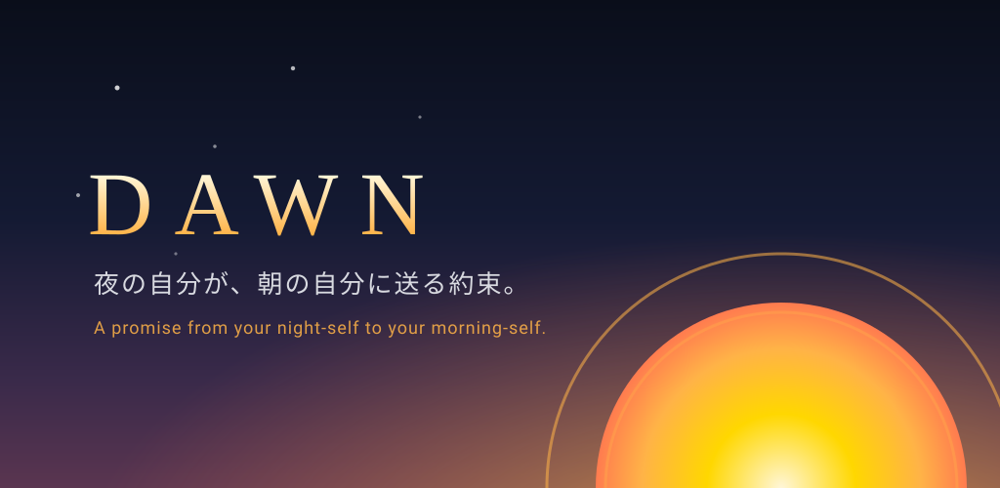

Primary Icon
assets/icon-primary.svg
Alternative Icon
assets/icon-alt.svg
Monochrome Icon (transparent — shown on a tinted frame)
assets/icon-monochrome.svg
Feature Graphic (1024×500)
assets/feature-graphic.svg

App icon design preview — 夜の自分が朝の自分に送る約束
assets/icon-primary.svg
assets/icon-alt.svg
assets/icon-monochrome.svg
assets/feature-graphic.svg
